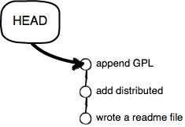
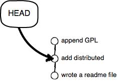

现在，你已经学会了修改文件，然后把修改提交到 Git 版本库，现在，再练习一次，修改 readme.txt 文件如下：
Git is a distributed version control system.
Git is free software distributed under the GPL.
然后尝试提交：
$ git add readme.txt
$ git commit -m "append GPL"
[master 3628164] append GPL
1 file changed, 1 insertion(+), 1 deletion(-)
像这样，你不断对文件进行修改，然后不断提交修改到版本库里，就好比玩 RPG 游戏时，每通过一关就会自动把游戏状态存盘，如果某一关没过去，你还可以选择读取前一关的状态。有些时候，在打 Boss 之前，你会手动存盘，以便万一打 Boss 失败了，可以从最近的地方重新开始。Git 也是一样，每当你觉得文件修改到一定程度的时候，就可以“保存一个快照”，这个快照在 Git 中被称为
commit
。一旦你把文件改乱了，或者误删了文件，还可以从最近的一个
commit
恢复，然后继续工作，而不是把几个月的工作成果全部丢失。
现在，我们回顾一下 readme.txt 文件一共有几个版本被提交到 Git 仓库里了：
版本1：wrote a readme file
Git is a version control system.
Git is free software.
版本2：add distributed
Git is a distributed version control system.
Git is free software.
版本3：append GPL
Git is a distributed version control system.
Git is free software distributed under the GPL.
当然了，在实际工作中，我们脑子里怎么可能记得一个几千行的文件每次都改了什么内容，不然要版本控制系统干什么。版本控制系统肯定有某个命令可以告诉我们历史记录，在 Git 中，我们用
git log
命令查看：
$ git log
commit 3628164fb26d48395383f8f31179f24e0882e1e0
Author: Michael Liao <askxuefeng@gmail.com>
Date: Tue Aug 20 15:11:49 2013 +0800
append GPL
commit ea34578d5496d7dd233c827ed32a8cd576c5ee85
Author: Michael Liao <askxuefeng@gmail.com>
Date: Tue Aug 20 14:53:12 2013 +0800
add distributed
commit cb926e7ea50ad11b8f9e909c05226233bf755030
Author: Michael Liao <askxuefeng@gmail.com>
Date: Mon Aug 19 17:51:55 2013 +0800
wrote a readme file
git log
命令显示从最近到最远的提交日志，我们可以看到 3 次提交，最近的一次是
append GPL
，上一次是
add distributed
，最早的一次是
wrote a readme file
。
如果嫌输出信息太多，看得眼花缭乱的，可以试试加上
--pretty=oneline
参数：
$ git log --pretty=oneline
3628164fb26d48395383f8f31179f24e0882e1e0 append GPL
ea34578d5496d7dd233c827ed32a8cd576c5ee85 add distributed
cb926e7ea50ad11b8f9e909c05226233bf755030 wrote a readme file
需要友情提示的是，你看到的一大串类似
3628164...882e1e0
的是
commit id
（版本号），和 SVN 不一样，Git 的
commit id
不是 1，2，3…… 递增的数字，而是一个 SHA1 计算出来的一个非常大的数字，用十六进制表示，而且你看到的
commit id
和我的肯定不一样，以你自己的为准。为什么
commit id
需要用这么一大串数字表示呢？因为 Git 是分布式的版本控制系统，后面我们还要研究多人在同一个版本库里工作，如果大家都用 1，2，3…… 作为版本号，那肯定就冲突了。
每提交一个新版本，实际上 Git 就会把它们自动串成一条时间线。如果使用可视化工具查看 Git 历史，就可以更清楚地看到提交历史的时间线。
好了，现在我们启动时光穿梭机，准备把 readme.txt 回退到上一个版本，也就是“add distributed”的那个版本，怎么做呢？
首先，Git 必须知道当前版本是哪个版本，在 Git 中，用
HEAD
表示当前版本，也就是最新的提交
3628164...882e1e0
（注意我的提交ID和你的肯定不一样），上一个版本就是
HEAD^
，上上一个版本就是
HEAD^^
，当然往上 100 个版本写 100 个
^
比较容易数不过来，所以写成
HEAD~100
。
现在，我们要把当前版本“append GPL”回退到上一个版本“add distributed”，就可以使用
git reset
命令：
$ git reset --hard HEAD^
HEAD is now at ea34578 add distributed
—hard
参数有啥意义？这个后面再讲，现在你先放心使用。
看看 readme.txt 的内容是不是版本
add distributed
：
$ cat readme.txt
Git is a distributed version control system.
Git is free software.
果然。
还可以继续回退到上一个版本
wrote a readme file
，不过且慢，然我们用
git log
再看看现在版本库的状态：
$ git log
commit ea34578d5496d7dd233c827ed32a8cd576c5ee85
Author: Michael Liao <askxuefeng@gmail.com>
Date: Tue Aug 20 14:53:12 2013 +0800
add distributed
commit cb926e7ea50ad11b8f9e909c05226233bf755030
Author: Michael Liao <askxuefeng@gmail.com>
Date: Mon Aug 19 17:51:55 2013 +0800
wrote a readme file
最新的那个版本
append GPL
已经看不到了！好比你从 21 世纪坐时光穿梭机来到了 19 世纪，想再回去已经回不去了，肿么办？
办法其实还是有的，只要上面的命令行窗口还没有被关掉，你就可以顺着往上找啊找啊，找到那个
append GPL
的
commit id
是
3628164...
，于是就可以指定回到未来的某个版本：
$ git reset --hard 3628164
HEAD is now at 3628164 append GPL
版本号没必要写全，前几位就可以了，Git 会自动去找。当然也不能只写前一两位，因为 Git 可能会找到多个版本号，就无法确定是哪一个了。
再小心翼翼地看看 readme.txt 的内容：
$ cat readme.txt
Git is a distributed version control system.
Git is free software distributed under the GPL.
果然，我胡汉三又回来了。
Git 的版本回退速度非常快，因为 Git 在内部有个指向当前版本的
HEAD
指针，当你回退版本的时候，Git 仅仅是把
HEAD
从指向
append GPL
：

改为指向
add distributed
：

然后顺便把工作区的文件更新了。所以你让
HEAD
指向哪个版本号，你就把当前版本定位在哪。
现在，你回退到了某个版本，关掉了电脑，第二天早上就后悔了，想恢复到新版本怎么办？找不到新版本的
commit id
怎么办？
在 Git 中，总是有后悔药可以吃的。当你用
$ git reset --hard HEAD^
回退到
add distributed
版本时，再想恢复到
append GPL
，就必须找到
append GPL
的
commit id
。Git 提供了一个命令
git reflog
用来记录你的每一次命令：
$ git reflog
ea34578 HEAD@{0}: reset: moving to HEAD^
3628164 HEAD@{1}: commit: append GPL
ea34578 HEAD@{2}: commit: add distributed
cb926e7 HEAD@{3}: commit (initial): wrote a readme file
终于舒了口气，第二行显示
append GPL
的
commit id
是
3628164
，现在，你又可以乘坐时光机回到未来了。
现在总结一下：
HEAD
指向的版本就是当前版本，因此，Git 允许我们在版本的历史之间穿梭，使用命令
git reset --hard commit_id
。
穿梭前，用
git log
可以查看提交历史，以便确定要回退到哪个版本。
要重返未来，用
git reflog
查看命令历史，以便确定要回到未来的哪个版本。